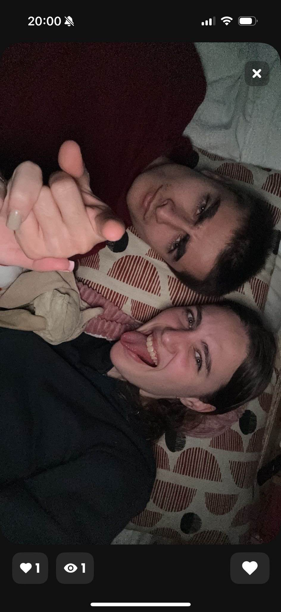
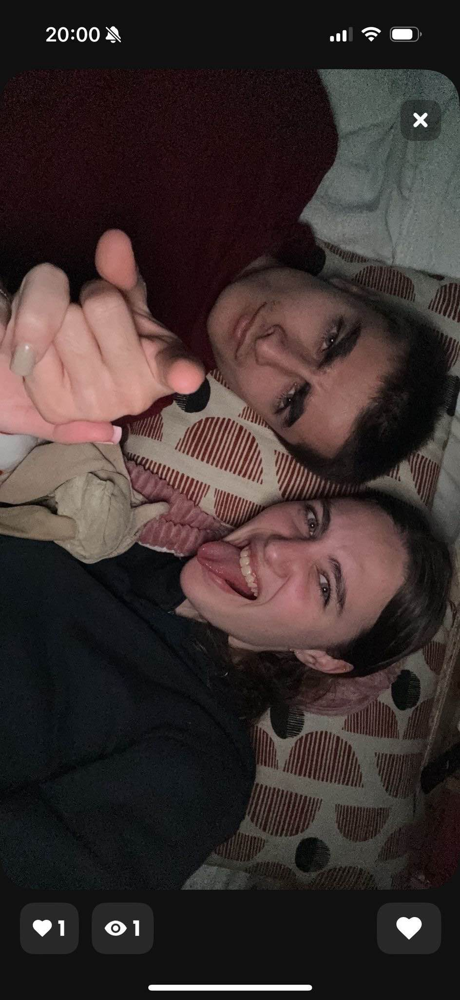
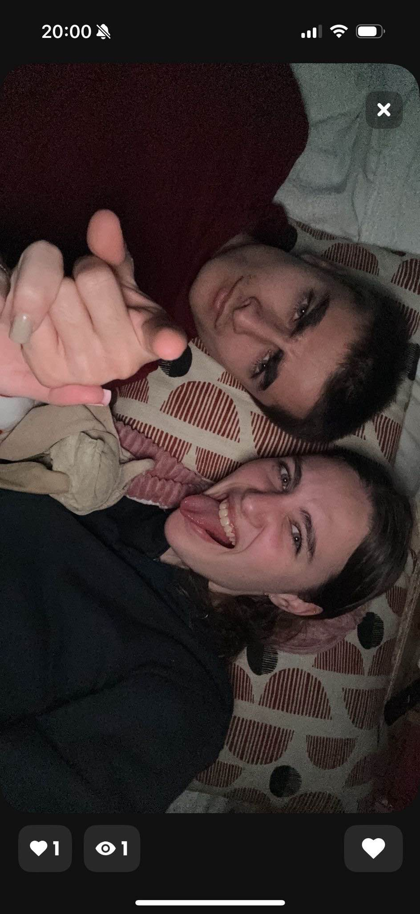

Quelques Souvenirs 🌸


 

Les moments forts et les souvenirs précieux de notre histoire d'amour.
Nous nous sommes rencontrés sur Tinder après quelques jours à échanger et apprendre à se connaître. Une connexion s’est vite créée, donnant naissance à cette belle histoire. ❤️
Notre premier rendez-vous s'est déroulé au restaurant Café des Arts à Aubagne. Je t’ai invitée et on a passé une merveilleuse soirée à rire, discuter et déguster de bons plats. 🥂🍽️
Notre premier baiser, c’était lors de notre deuxième rendez-vous. On avait installé des couvertures et des plaids dans la voiture, acheté plein de gourmandises, et on a regardé un film sous les étoiles. 🌌🍫🎬

🥰 Une rencontre inattendue, une histoire inoubliable. Nous, Tom & Angèle, nous sommes rencontrés par hasard, mais chaque jour ensemble est devenu une évidence. Cette page est le témoin de nos souvenirs, de nos fous rires, et de tous ces moments simples qui font la beauté de notre histoire. Ce site est à notre image : authentique, sincère et rempli d'amour. 💖

Je suis passionné par les voitures, les motos et les sports.
J'adore l'équitation et la gymnastique.